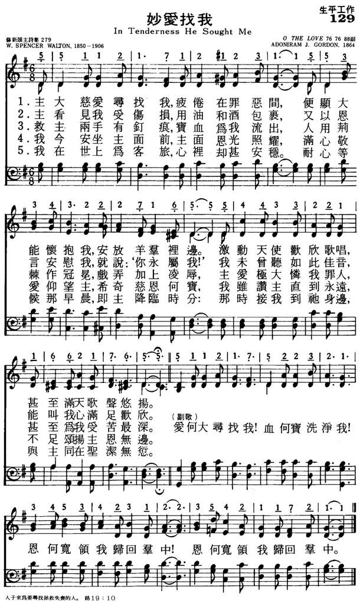

|
|
讚美詩(新編) 第200首《聖言常存歌》 |
|
1 In tenderness He sought me, Refrain: 2 He washed the bleeding sin-wounds 3 He pointed to the nail-prints, 4 I’m sitting in His presence, 5 So while the hours are passing, Source: Worship and Service Hymnal: For Church, School, and Home #275
|
|
|
https://www.zanmeishige.com/tab/13873.html?songbook=1&index=200

|
|
|
|
|


https://www.youtube.com/watch?v=C5oho8uUmt4&list=PLcOMG0FdMLMASkcGa9EGej2EJdzKRG6bR&index=201 -
https://youtu.be/N4S8BK1u3YU -
George Beverly Shea In Tenderness He Sought Me https://www.youtube.com/watch?v=9O-vQGWy69E
| Text: | In Tenderness He Sought Me |
| Author: | W. Spencer Walton, 19th Century |
| Tune: | [In tenderness He sought me] |
| Composer: | Adoniram J. Gordon, 1836-1895 |
Tune Information
| Title: | [In tenderness He sought me] (Gordon) |
| Composer: | Adoniram J. Gordon (1894) |
| Meter: | 7.6.7.6.8.8.6.6.9.9 |
| Incipit: | 55112 17121 23155 |
| Key: | G Major |
| Copyright: | Public Domain |
| Short Name: | Adoniram J. Gordon |
| Full Name: | Gordon, A. J. (Adoniram Judson), 1836-1895 |
| Birth Year: | 1836 |
| Death Year: | 1895 |
Adoniram J. Gordon (b. New Hampton, NH, 1836; d. Boston, MA, 1895)
was educated at Brown University, Providence, Rhode Island, and Newton Theological Seminary, Newton, Massachusetts. After being ordained in 1863, he served the Baptist Church in Jamaica Plain, Massachusetts, and the Clarendon Street Baptist Church, Boston. A close friend of Dwight L. Moody, he promoted evangelism and edited The Service of Song for Baptist Churches (1871) as well as The Vestry Hymn and Tune Book (1872). Both Gordon College and Gordon-Conwell Theological Seminary are named after Gordon.
Bert Polman
第222首 妙爱找我歌 O,THE LOVE THAT SOUGHT ME _W.S.Walton
经文：“人子来，为要寻找、拯救失丧的人”(路19：1O)。
这首诗的作者沃尔顿(W.S.Walton，185O-1906)的事略无从查考，只知道他与这首诗曲作者戈登有过亲密的来往。
戈登（A.J.Gordon,1836-1895)是美国浸信会派遣到印度、缅甸的首批传教士，波士顿的戈登学院就为纪念他这件事而建。戈登本人是布朗大学和牛顿神学院的毕业生，历任好几个浸会堂的牧师。他与这首诗的作者沃尔顿都是慕迪、桑基布道团的合作者，亦曾担任浸会编辑，出版过好几本灵修书籍和附有琴谱的赞美诗。
这首诗调名为《妙爱(O THE LOVE)》，三十年代起在我国就很流行。
《妙爱找我歌》犹如一幅《主寻亡羊》图，耶稣是慈牧，我们是迷羊，他披荆斩棘来寻找，领我们归回羊群。此恩此爱何等深广，实非人能测度。所以当大家齐声同唱这首诗时(尤其副歌)，都感动不已。
讚美詩源考小組策劃 丁春芳撰稿
In tenderness He sought me, 主大慈愛尋找我
作詞：W. Spencer Walton, 1894作曲：Adoniram Judson Gordon, 1836-1895
曲調名：TENDERNESS，76.76.88副
<第一節譜例與中、英文歌詞>
In tenderness He sought me, Weary and sick with sin;
主大慈愛尋找我，前曾沉罪惡間，
高登（Adoniram Judson Gordon, 1826-1895）出生於新罕布什爾州，紐約布朗大學神學博士，是美國浸信會著名的牧師。多年來一直致力於發掘新的聖詩，讓信徒吟唱。
本詩歌是從他於1870年出版的《The London Hymn Book》中所挑選出來的。因他被其中的歌詞所吸引，但對該詩的旋律並不滿意，有一天，腦海中突然浮現出一段詠嘆調的靈感，於是他立即配上本詩的歌詞，因而成就了這首〈妙愛找我〉，並於1876年出版。
高登同時也是當時著名的佈道家慕迪（Moody）的同工，協助福音佈道團選詞、教唱與領詩的工作。
原來的英文詩歌有五節歌詞，但在中文讚美詩中，僅有四節歌詞。
本詩是依據《路加福音》十九章10節：「人子來，為要尋找，拯救失喪的人」而寫，這也呼應了《路加福音》在十五章4-6、10節所述：「你們中間誰有一百隻羊失去一隻，不把這九十九隻撇在曠野、去找那失去的羊，直到找著呢？找著了，就歡歡喜喜的扛在肩上，回到家裡，就請朋友鄰舍來，對他們說：『我失去的羊已經找著了，你們和我一同歡喜吧！』我告訴你們，一個罪人悔改，在天上也要這樣為他歡喜。」將人子尋獲迷羊的心情及一個回轉向神的心靈的滿足表露無遺。
註：本詩有二個通用的曲調名 TENDERNESS與O THE LOVE，均為神大慈愛之意。
http://elibrary.tjc.org/content/cm/zh/article/HS/2007/9/HSM2007_9_24_JoyID_3493.htm
Words: William Spencer Walton (b. Jan. 15, 1850; d. Aug.
26, 1906)
Music: Clarendon, by Adoniram Judson Gordon (b. Apr. 13,
1836; d. Feb, 2, 1895)
Links:
Wordwise Hymns
The Cyber
Hymnal
Hymnary.org
Note: Mr. Walton was a career missionary in South Africa. He wrote a number of books, particularly about his experiences, and the Cyber Hymnal lists three hymns of his. Published in 1894, the present one is by far the best known. It is an excellent gospel song, revelling, as it does, in the joy of salvation from sin, through the grace of God and the finished work of Christ.
The word tender (or tenderness) is perhaps not one we commonly use today to describe human feelings and motivations. (We’re more likely to use the term of a good steak!) But the psalmists speak frequently of the “tender mercies” of God.
“The LORD is good to all, and His tender mercies are over all His works: (Ps. 145:9).
“Let Your tender mercies come to me, that I may live; for Your law is my delight” (Ps. 119:77)
Frequently such prayers involve a plea for God’s compassion and mercy in the light of former sinfulness.
“Remember, O LORD, Your tender mercies and Your lovingkindnesses, for they are from of old. Do not remember the sins of my youth, nor my transgressions” (Ps. 25:6-7).
“Do not withhold Your tender mercies from me, O LORD; let Your lovingkindness and Your truth continually preserve me. For innumerable evils have surrounded me; my iniquities have overtaken me, so that I am not able to look up” (Ps. 40:11-12).
“Have mercy upon me, O God, according to Your lovingkindness; according to the multitude of Your tender mercies, blot out my transgressions” (Ps. 51:1).
“Oh, do not remember former iniquities against us! Let Your tender mercies come speedily to meet us, for we have been brought very low” (Ps. 79:8).
In light of this emphasis, the words of Zacharias in the New Testament become powerfully significant. Under the inspiration of the Holy Spirit (Lk. 1:67), he spoke of the coming birth of the Saviour and said:
“Through the tender mercy of our God…the Dayspring [dawning] from on high has visited us (vs. 78).
This is reminiscent of the messianic promise of Malachi that “the Sun of Righteousness shall arise” (Mal. 4:2), and of the glorified Christ speaking of Himself as “the Bright and Morning Star” (Rev. 22:16). The Dayspring is the Lord Jesus Christ.
When Christ, who is “the light of the world” (Jn. 8:12) comes into our lives, a new day dawns, and the darkness is dispelled. Through faith in Christ, God has cleansed us of our sins (Eph. 1:7; I Jn. 1:7), and “delivered us from the power of darkness and conveyed us into the kingdom of the Son of His love” (Col. 1:13; cf. Acts 26:17-18). That is tender mercy indeed!
CH-1) In tenderness He sought me,
Weary and sick with sin;
And on His shoulders brought me
Back to His fold again.
While angels in His presence sang
Until the courts of heaven rang.
Oh, the love that sought me!
Oh, the blood that bought me!
Oh, the grace that brought me to the fold,
Wondrous grace that brought me to the fold.
CH-2) He washed the bleeding sin wounds,
And poured in oil and wine;
He whispered to assure me,
“I’ve found thee, thou art Mine;”
I never heard a sweeter voice;
It made my aching heart rejoice!
Not only do we have light now, through Christ, we look forward to the dawning of eternity, when all that is sinful and corrupt will be wiped away forever.
CH-5) So while the hours are passing,
All now is perfect rest,
I’m waiting for the morning,
The brightest and the best,
When He will call us to His side,
To be with Him, His spotless bride.
Questions:
1) In what way have you experienced the tender mercies of God today?
2) In what way is darkness a good symbol for sin?
https://wordwisehymns.com/2014/08/01/in-tenderness-he-sought-me/
Adoniram Judson Gordon (1836–1895) founder of Gordon College and Gordon–Conwell Theological Seminary.
{kind=link}
Adoniram Judson "A. J." Gordon (1836–1895) was an American Baptist preacher, writer, composer, and founder of Gordon College and Gordon–Conwell Theological Seminary.
Life[edit]
Gordon was born in New Hampton, New Hampshire, on April 19, 1836. His father, Baptist deacon John Calvin Gordon, was a Calvinist named after John Calvin. His mother was Sally Robinson Gordon. A.J. Gordon was named after Adoniram Judson, a Baptist missionary to Burma who had recently completed a Burmese translation of the Bible.[1]
Gordon experienced a Christian conversion at age 15 and thereafter sought to become a pastor. He graduated from Brown University (then a Baptist affiliated school) in 1860 and Newton Theological Institution in 1863. In 1863, he married Maria Hale and became pastor of Jamaica Plain Baptist Church in Roxbury, Massachusetts. In 1869, he became pastor of Clarendon Street Baptist Church in Boston, a fairly affluent church. Under Gordon's leadership, Clarendon Street Church was described as "one of the most spiritual and aggressive in America". The church is no longer in operation. Gordon became a favored speaker in evangelist Dwight L. Moody's Northfield conventions.[2] Every summer Gordon returned to his hometown in New Hampshire and often preached at the Dana Meeting House.[3]
Gordon became suddenly ill with influenza and bronchitis and died at age 59 on February 2, 1895. He is buried in Forest Hills Cemetery.[4] A son, Ernest Barron Gordon, published a biography of his father in 1896, titled Adoniram Judson Gordon, a Biography with Letters and Illustrative Extracts Drawn from Unpublished or Uncollected Sermons and Addresses, which is still in print.[5]
College[edit]
In 1889, with the help and backing of Clarendon Street Church, he founded Gordon Bible Institute and served as its first president.[6] His wife, Maria, was secretary and treasurer until 1908. Gordon's school was founded primarily to train missionaries for work in the Congo.
Writings and teachings[edit]
Gordon edited two hymn books and wrote the hymn tunes for at least fifteen hymns, including "My Jesus, I Love Thee," a hymn that has been included in nearly every evangelical hymnal published from 1876 to the present time. In his book The Ministry of the Holy Spirit, Gordon wrote, "It seems clear from the Scriptures that it is still the duty and privilege of believers to receive the Holy Spirit by a conscious, definite act of appropriating faith, just as they received Jesus Christ" (see Baptism with the Holy Spirit).[7]
His most remembered work is probably The Ministry of Healing,[7] a highly revered book on divine healing—physical, mental, and spiritual.[8] Gordon located healing in Christ's Atonement, meaning it was universally available through faith in Christ. He prayed for the sick privately, however, and did not integrate healing into his regular church ministry. The Ministry of Healing became a standard work among early Pentecostals.[9]
Quotes[edit]
One of his most often-quoted sayings still is "You can do more than pray after you have prayed, but you cannot do more than pray until you have prayed."[10]
{kind=link}
{kind=link}
{kind=link}
{kind=link}
https://en.wikipedia.org/wiki/Adoniram_Judson_Gordon
-妙爱找我 诗歌背景资料：
高登（Adoniram Judson
Gordon,1826-1895）出生于新罕布什尔州，纽约布朗大学神学博士，是美国浸信会著名的牧师。多年来一直致力于发掘新的圣诗，让信徒吟唱。本诗歌是从他于1870年出版的《The
London Hymn
Book》中所挑选出来的。因他被其中的歌词所吸引，但对该诗的旋律并不满意。有一天，脑海中突然浮现出一段咏叹调的灵感，于是他立即配上本诗的歌词，因而成就了这首《妙爱找我》，并于1876年出版。高登同时也是当时著名的布道家慕迪（Moody）的同工，协助福音布道团选词、教唱与领诗的工作。
原来的英文诗歌有五节歌词，但在中文赞美诗中，仅有四节歌词。本诗是依据《路加福音》十九章10节：“人子来，为要寻找，拯救失丧的人”而写，这也呼应了《路加福音》在十五章4∼6、10节所述：“你们中间谁有一百只羊失去一只，不把这九十九只撇在旷野、去找那失去的羊，直到找着呢？找着了，就欢欢喜喜的扛在肩上，回到家里，就请朋友邻舍来，对他们说：‘我失去的羊已经找着了，你们和我一同欢喜吧！’我告诉你们，一个罪人悔改，在天上也要这样为他欢喜。”将人子寻获迷羊的心情及一个回转向神的心灵的满足表露无遗。
IN TENDERNESS HE SOUGHT ME
“Great are Thy tender mercies, O Lord” (Psalm 119:156)
INTRO.:
“Great are Thy tender mercies, O Lord” (Psalm 119:156)
INTRO.:
The song helps us to understand the great lengths to which Christ went to save
us.
I. Stanza 1 tells why Jesus did what He did
In tenderness He sought me,
Weary and sick with sin;
And on His shoulders brought me
Back to His fold again.
While angels in His presence sang
Until the courts of Heaven rang.
A. Jesus sought us tenderly because were sinners: 1 Tim. 1:15
B. Like a shepherd, He wanted to bring us back to the fold: Matt. 18:11-13
C. And when a lost sheep is returned, the angels rejoice: Lk. 16:4-7
II. Stanza 2 tells what Jesus did
He washed the bleeding sin wounds,
And poured in oil and wine;
He whispered to assure me,
I’ve found thee, thou art Mine;
I never heard a sweeter voice;
It made my aching heart rejoice!
A. He washed us from our sins: Rev. 1:5
B. He whispered to us His sweet assurance: 1 Jn. 5:13
C. And He made our hearts rejoice: Acts 8:35-39
III. Stanza 3 tells how He did it
He pointed to the nail prints,
For me His blood was shed,
A mocking crown so thorny
Was placed upon His head;
I wondered what He saw in me,
To suffer such deep agony.
A. He shed His blood for us: Matt. 26:28
B. He experienced cruel mocking with the crown of thorns: Mk. 15:16-20
C. He suffered deep agony: 1 Pet. 3:18
IV. Stanza 4 tells the present result of what He did
I’m sitting in His presence,
The sunshine of His face,
While with adoring wonder
His blessings I retrace.
It seems as if eternal days
Are far too short to sound His praise.
A. We sit with Him in heavenly places: Eph. 2:4-6
B. We enjoy all spiritual blessings: Eph. 1:3
C. We sound His praises: 1 Pet. 2:9
V. Stanza 5 tells the future result of what He did
So while the hours are passing,
All now is perfect rest,
I’m waiting for the morning,
The brightest and the best,
When He will call us to His side,
To be with Him, His spotless bride.
A. The hours are passing so that our salvation is nearer than before: Rom. 13:11
B. We now wait for the coming of the Lord: 1 Thess. 1:9-10
C. Then He will call us to be with Him in heaven: 1 Thess. 4:13-17
CONCL.:
Oh, the love that sought me!
Oh, the blood that bought me!
Oh, the grace that brought me to the fold,
Wondrous grace that brought me to the fold.
This song might be useful to sing before the Lord’s supper. It reminds me that I
was a lost sinner destined for eternal damnation, but because He loves me and
wanted to save me, Jesus came and “In Tenderness He Sought Me.”